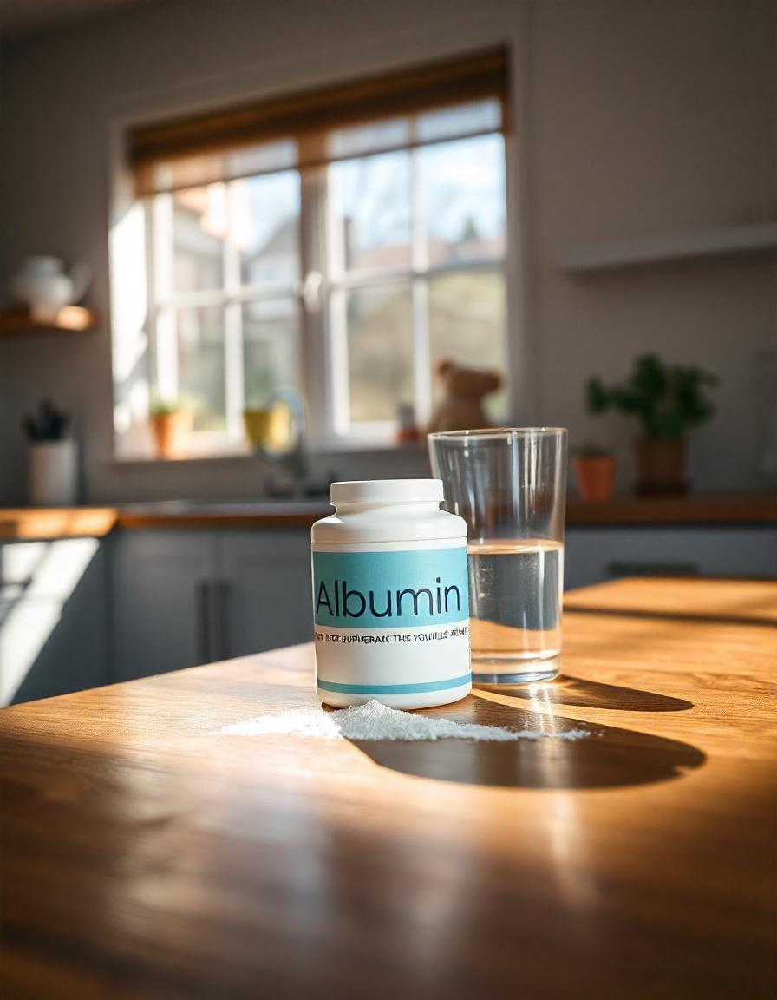

A Albumina é uma proteína de alta qualidade extraída da clara do ovo, muito utilizada por quem busca
aumentar a ingestão de proteínas para o crescimento muscular e recuperação pós-treino.
Benefícios da Albumina:
- Fonte de proteína de alto valor biológico, com excelente digestibilidade.
- Auxilia no aumento de massa muscular magra.
- Promove a recuperação muscular pós-treino devido ao seu alto teor de aminoácidos essenciais.
- Ideal para quem busca controlar o consumo de carboidratos, já que possui baixo teor de gordura e
carboidratos.
- Ajuda na manutenção da saúde da pele, cabelos e unhas devido à presença de aminoácidos importantes.
Onde Encontrar a Albumina
A Albumina pode ser encontrada em diversas lojas especializadas em suplementos alimentares, como:
- Loja X - Rua das Suplementos, 123
- Farmácia Y - Avenida da Saúde, 456
- Online: Sites como Mercado Livre, Amazon, e lojas especializadas em nutrição esportiva
Como Tomar a Albumina
A Albumina pode ser consumida de diversas formas, dependendo das necessidades individuais. A forma mais
comum de consumo é:
- 1 porção (geralmente 20-30g) misturada com água ou leite, no pós-treino, para promover a recuperação
muscular.
- Ao longo do dia, como um lanche rico em proteínas, entre as refeições principais.
É recomendável misturar com líquidos sem açúcar para evitar o consumo excessivo de calorias e garantir a
qualidade nutricional do suplemento.
Como é Produzida a Albumina
A Albumina é produzida através do processo de separação da clara do ovo. O processo de produção envolve
as seguintes etapas:
- Separação da clara do ovo das gemas.
- Filtração e pasteurização da clara de ovo para garantir sua segurança e eliminar microrganismos.
- Secagem da clara de ovo pasteurizada, transformando-a em pó.
- Embalagem do pó de albumina em sachês ou potes, prontos para o consumo.
Este processo assegura que a albumina seja de alta qualidade e segura para o consumo, mantendo a
integridade dos aminoácidos essenciais.